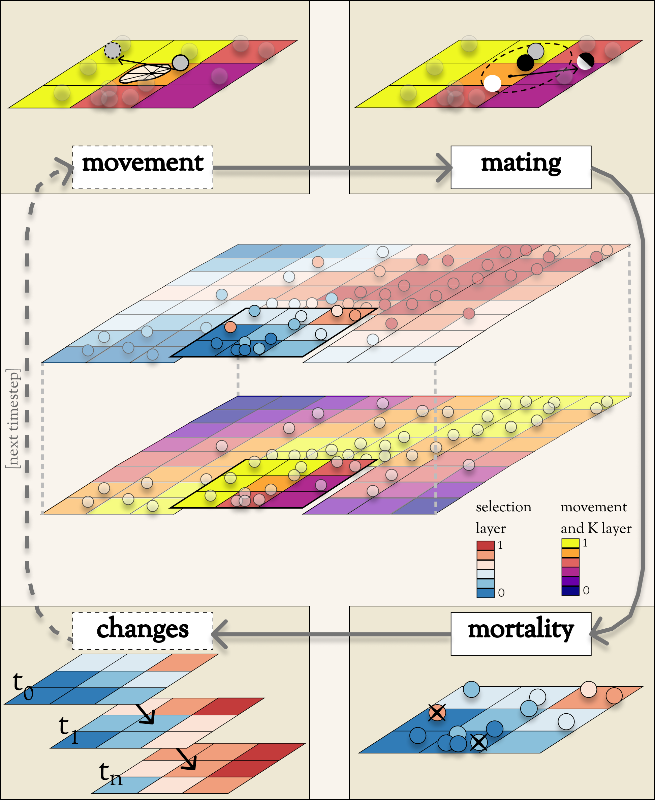

Conceptual Diagram¶
As you read through the Overview, you may want to refer to this conceptual diagram as a useful reference.
The primary Data structures are depicted in the central image.
Most of the key Operations are depicted in the cycle of four corner boxes.
